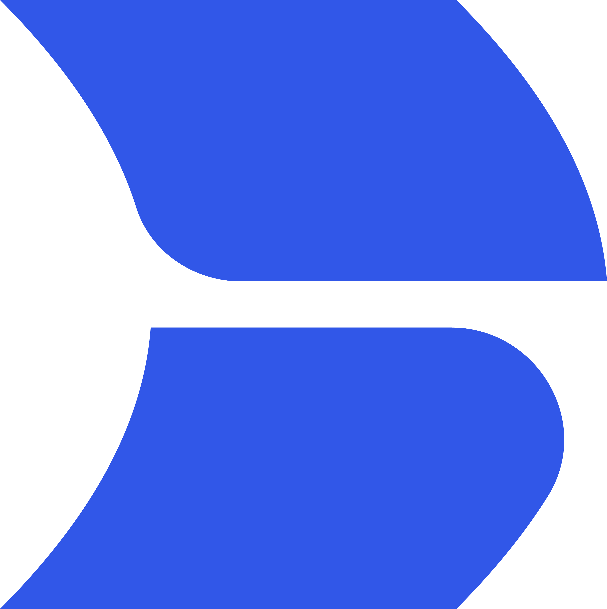

⌕
Find repositories
Scan selected folders and keep a local list of the repositories you work on.

haleacas.A desktop app for exploring and keeping track of local software repositories. Built to bring repository details, Git history, and useful tools together in one place.
The project was made for developers who work with several repositories at once. These are some of the tools and workflows included in the source code.
Scan selected folders and keep a local list of the repositories you work on.
Review repository information and inspect dependencies from supported project files.
Look through repository timelines and commit statistics from the app.
Connect to GitHub for repository details, releases, inbox items, and Actions information.
Review README files and use an optional AI provider with context selected in the app.
Built with Tauri, including system tray support and local application settings.
The interface is built with React and TypeScript. Tauri connects it to the Rust backend, where repository and Git operations are handled.
$ npm install $ npx tauri dev # Build the desktop application $ npx tauri build
Haleacas is kept here as a reference. It is an early implementation, so some parts may need work before they can be used in a current environment.
The original author is no longer updating this repository.
Some features may be incomplete or untested. Do not assume the app is production-ready.
Issues and pull requests may go unanswered. There is no ongoing support commitment.
Repository information is primarily handled locally. GitHub and AI connections are optional.
If you used Haleacas, tested it, or are simply curious about how it was made, the source is here for you to explore. You are welcome to fork it under the MIT License.
Open the GitHub repository ↗